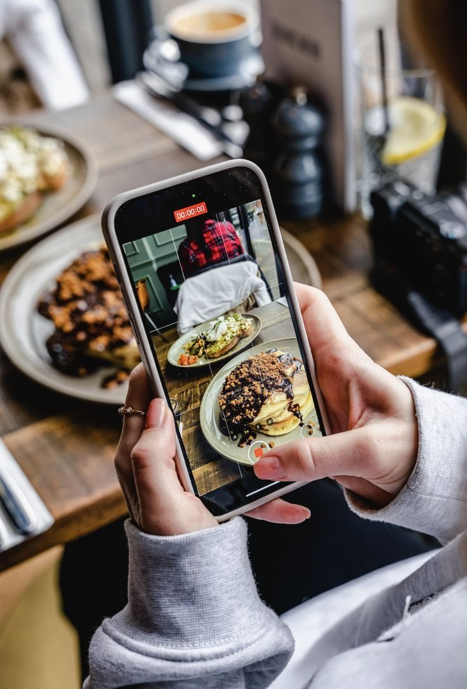

Cafés & restaurants
Brunch tables, new menus and weekend specials — posted by foodies whose followers actually live nearby.
BrunchNew menuWeekend rush
LocalCreators matches small businesses with small creators (1,000–10,000 followers) in the same suburb. Subscribe for access, post one brief, set the budget you can actually afford — creators accept it or counter, and you approve the finished post before you pay.
Influencer marketing has meant agency retainers or global platforms built for big brands, in USD. LocalCreators is the opposite end of the market on purpose: small businesses on one side, small creators on the other — starting with Sydney's local favourites.
Brunch tables, new menus and weekend specials — posted by foodies whose followers actually live nearby.
Before-and-afters and honest reviews from local beauty creators your next client already follows.
Trial-week content, class reviews and transformation stories from fitness creators in your catchment.
New drops, try-ons and gift guides from neighbourhood style creators — not offshore influencers.
We took the mechanic that works best from each big platform — Posted's leaderboards, TRIBE's approval flow, Collabstr's transparent rates — dropped the parts priced for big brands, and rebuilt it for small businesses and small creators, in AUD.
Creators submit the finished post, not a promise. Your budget sits in escrow until you approve it and it passes the #ad disclosure check — only then is the creator paid.
Every profile shows the creator's rate, suburb, niche and engagement before you invite them — so your budget decision is informed, not a DM negotiation.
Creators compete harder when posts are ranked. Every brief week ends with a leaderboard ranked by local views — without Posted's $500/mo wall or $5,000 contest minimum.
The one thing none of them do: matching at suburb level, because a Glebe local doesn't drive to Cronulla for brunch. Small business, small creators, same streets.
About five minutes in the wizard: pick your suburb, write one simple brief, and put a number on it. That number is yours — not a fixed creator price set by us.
Join from $29/mo, pick your suburb and say what you need — a new menu, a trial week, a Saturday sale. Set the budget for the brief, from a $50 minimum, guided by the going local rate so lowballs don't sit empty.
Local small creators whose transparent rate fits your budget accept it; others can counter or pitch you directly. Reliability scores surface first — creators who deliver on time and pass checks jump the queue.
Creators submit the finished post first. It goes live to their local audience, you watch real views and engagement roll in — and your budget is only released from escrow once you approve content that's live and disclosure-checked.
Each week, posts are ranked by local views on your suburb's leaderboard. Winners get rebooked first and earn more of your next brief — and on Growth, you can license the winning posts to run on your own channels.
As your briefs run, top posts top the leaderboard. Creators see what wins in their suburb, post sharper content next week, and each cycle lands harder. The longer it runs locally, the stronger it gets.
Join the waitlistSmall creators are locals whose followers know them by name. The research is clear — and it's why several local posts in the same week beat betting everything on one bigger name.
Every LocalCreators creator is a real local with 1,000–10,000 followers, an audience in their own neighbourhood — and a rate you can see upfront, no DM haggling. Tap any creator to see their full card and rate.
Creator profiles shown are illustrative examples of the local small creators the platform is built for.
Borrowed from the contest platforms, made local: each week's briefs end with a leaderboard ranked by local views — friendly competition for creators, and a clear view of what your budget delivered. Filter by category to see who's performing near you.
Example leaderboard — LocalCreators launches soon, and live rankings will be published from real campaigns.
Audience matching works at suburb level — because a Glebe local doesn't drive to Cronulla for brunch. Pick your suburb to see the creators nearby and what briefs there usually go for.
Dense café scene, brunch-obsessed locals, creators within walking distance of Crown Street.
*Illustrative estimates for preview purposes — live figures publish at launch.
Posted is a good platform — for brands with enterprise budgets. Its own help centre lists a $500/month subscription and a $5,000 contest minimum (October 2026). Here's how the models compare for a Sydney small business.
Subscription for access, then you set the budget on every brief. Built only for small businesses & small creators.
Global creator app priced for bigger brand budgets.
Managed service — real expertise, priced for bigger launches.
Posted pricing: Posted help centre, updated October 2026. The agency card reflects typical managed-service arrangements, not a single named agency.
Two separate things, kept separate on purpose: the subscription pays for access to the platform. Your brief budget pays creators — and you set it, brief by brief, from a $50 minimum per brief. No fixed creator price, no lock-in.
For cafés, salons and shops posting their first briefs.
For businesses running briefs every week and reusing the winners.
For owners with 2–3 shops, salons or studios.
Subscription prices in AUD. Your brief budget is separate, starts from a $50 minimum per brief, and is only paid out when you approve finished content; a 10% platform fee applies to approved brief budgets only — shown before you post a brief, never hidden. Waitlist members lock in founding subscription pricing.
There is no fixed creator price on LocalCreators — just a $50 minimum per brief, so joke offers can't sit empty. Drag the budget for one brief and see the shape of it — creators with rates that fit can accept, others can counter. You still approve every finished post before any of it is paid out.
Every brief starts from a $50 minimum. Most local briefs land between $100 and $300. The app shows the going rate for your suburb as you set it, so a budget that's too low warns you before it sits empty.
*Illustrative estimates based on local small-creator rates and engagement on this page — live guidance publishes at launch.
The numbers behind the model — and the kind of week local owners are joining the waitlist for.
We stopped boosting posts to the whole city. Six locals posting in one week did more for our Saturday queue than a year of ads — because their followers actually live here.
The rate is right there on the profile. No DM haggling, no surprises — I set a budget that fit, and I approved the finished post before a dollar moved.
Our trial-week brief filled classes because the creators' followers train in this area. The weekly leaderboard made them compete to out-post each other.
Illustrative example quotes — LocalCreators is launching soon in Sydney; these show the results the platform is built to deliver.
Straight answers on small creator marketing in Australia — costs, tactics and local playbooks, with the research cited.
What small creators are, why their 2.1% median engagement beats mega creators, and how Australian small businesses can actually buy this — without enterprise budgets.
Read the guide →
SydneyWhere Sydney's UGC creators actually are, what suburb-level matching means, and the brief format that gets posts published on time.
Read the guide → Hospitality
HospitalityThe hospitality playbook: brunch content that fills tables, launch weeks, and why local foodie small creators outperform one big food account.
Read the guide → Pricing
PricingReal numbers: the $110 median small creator post, the $636 micro comparison, platform fees — and how subscription + set-your-own-budget pricing changes what a small business should pay.
Read the guide →Small creator marketing in Australia is the practice of working with creators who have 1,000–10,000 followers — real locals whose audiences are concentrated in a suburb, a school community, a gym, or a scene. For years, influencer marketing for small business in Australia effectively meant two bad options: pay an agency a retainer you couldn't justify, or DM creators yourself and hope. Small creator marketing, bought properly — several local creators on one brief, at a budget you set — is the third option — and the research says it may be the best one.
Creator tiers are usually defined by follower count: small (1K–10K), micro (10K–100K), macro (100K–1M) and mega (1M+). Follower count is a reach number, not a trust number. A small creator's audience is mostly people who know them, live near them, or share their specific interest — a Marrickville mum who posts playground-friendly cafés, a Newtown trainer who posts 5am workouts. When that person recommends your business, it lands like a word-of-mouth tip, because structurally, it is one.
The numbers back this up. In Virev's 2026 study of 391,731 Instagram creators, small creators recorded a median engagement rate of 2.1% — double the micro median of 1.0% and more than four times the mega median of 0.5%. Engagement is the share of an audience that actually likes, comments, saves and shares. A mega creator may reach more screens; a small creator reaches more people who act.
Any honest guide to small creator marketing in Australia has to say this plainly: a single small creator is a gamble. The same research shows half of small creator sponsored reels received under 2,100 views. A small creator's audience is small, and small audiences are variable. If you pay one small creator and the post underperforms, you have spent money to learn nothing.
That is exactly why the unit of purchase matters. Several small creators posting about your business in the same week is not several separate gambles — it is a portfolio. Some posts will be quiet. A few will travel. Together they put your name in front of overlapping local audiences repeatedly, which is how local awareness actually forms — and spreading one brief budget across them converts small creator marketing from a lottery ticket into a channel.
Australia has 2.66 million small businesses (ABS Counts of Australian Businesses, June 2025) — cafés, salons, gyms, boutiques, tradies and local services that live or die on their catchment area. A café in Surry Hills gains nothing from a follower in Perth. Global platforms optimise for country-level reach; Australian small businesses need suburb-level relevance. That mismatch is the whole opportunity.
It is also why pricing matters. The global platforms that dominate this category were built for bigger brands: Posted, for example, charges a $500/month subscription with a $5,000 minimum for its contests (Posted help centre, October 2026). That is rational pricing for a US brand team. It is a non-starter for a two-person salon in Balmain. Affordable influencer marketing in Australia has to start under $100 a month, in AUD, with just a $50 minimum per brief — which is precisely the gap LocalCreators is built to fill.
Start with one clear offer, not your whole menu or service list: the new winter menu, a trial week, a Saturday sample sale. Give creators a genuine reason to visit and something specific to show. Keep the brief simple — what to post, when, and the one thing to mention — and let creators shoot in their own style, because their style is what their audience trusts.
Timing matters locally. Concentrate posts in a single week so the suburb sees your name repeatedly in a short window; scattered posts across a month rarely build the same recognition. Track views, engagement and — most importantly — redemptions: a code word at the counter, a "mention this post" offer, or a booking link. Views tell you about reach; redemptions tell you about revenue.
Sponsored content in Australia must be disclosed, and regulators are enforcing it — the ACCC issued its first financial penalty for influencer disclosure failures in 2026. Every post through LocalCreators is briefed with #ad and Paid Partnership tagging, and checked before payment is released. If you run small creator campaigns yourself, hold the same line: disclosure is not a growth hack risk, it is a legal requirement and a trust signal to customers who can smell an undisclosed ad instantly.
The median sponsored small creator post costs $110, versus $636 for a micro creator (Virev 2026). Bought individually with your own time spent finding, vetting and chasing creators, buying posts one by one, month after month, can quietly cost far more in hours than in fees. A subscription platform — LocalCreators starts at $29/month for access, then you set the budget per brief, from a $50 minimum — trades that admin for a predictable line item and a creator spend you control. We break the full maths down in how much small creators cost in Australia.
If you run a Sydney café, start with our hospitality playbook on influencer marketing for cafés and restaurants. If you want to understand the creator side, read how businesses find and brief UGC creators in Sydney. And if you'd rather have it assembled for you — suburb matching, briefs, transparent rates, disclosure checks and a results leaderboard included — join the LocalCreators waitlist below. We're launching soon in Sydney, suburb by suburb.
Join the LocalCreators waitlist — launching soon in Sydney. We'll be in touch once the app is ready.
Join the waitlistSearch for UGC creators in Sydney and you'll find agencies, global marketplaces and a lot of noise. What a Sydney café, salon or boutique actually needs is simpler: local people, with local audiences, who will walk into your business this week and post content their neighbours trust. This guide covers where those creators are, how to judge them, and the brief format that gets content published on time.
UGC — user-generated content — originally meant content a brand could license and run on its own channels: a creator films a video, you post it as your ad or on your page. Influencer posts are published on the creator's own account, to their audience. For a Sydney small business, the creator's own post usually matters more: their followers are your catchment. The strongest campaigns combine both — posts on creator accounts for reach and trust, with reuse rights so the best content can run on your own channels afterwards. When you hire micro influencers in Sydney or work with small creators, be explicit about which you're buying, because the price and the value differ.
They are rarely on a stage at a creator conference. They are the regular who films every brunch in the Inner West, the trainer posting form checks to 4,000 followers, the beauty enthusiast whose "POV: getting my hair done in Parramatta" reels reliably pull comments from locals asking for the salon's name. You find them through suburb and niche hashtags, location tags on posts from businesses like yours, and the comments of your own customers.
The manual version of this search works — once. Doing it every month, vetting follower quality, negotiating rates in DMs, chasing late posts and checking disclosure is a part-time job. That admin burden, not creator supply, is the real reason most small businesses try UGC once and stop. Platforms like LocalCreators exist to absorb exactly that work: suburb matching, one brief at a budget you set, transparent rates, disclosure checked, results in one dashboard.
Good briefs are short. Cover five things: the one offer or product to feature; the visit window (give a week, not a day); the format (one Reel plus Stories is the local standard); the must-mentions (your handle, suburb, and the redemption hook); and the disclosure requirement (#ad, Paid Partnership tag). Then stop writing. Over-scripted briefs produce ads that audiences scroll past; the creator's own voice is the entire point of small creator and UGC marketing. For the strategy behind this, see our guide to small creator marketing in Australia.
The median sponsored small creator post is $110, and a micro post is $636 (Virev 2026) — but Sydney businesses buying one-off UGC videos through agencies or global marketplaces often pay well above the small creator median once fees and management are added. Subscription + set-your-own-budget buying changes the maths: access from $29/month on LocalCreators, then a brief budget you control, and we unpack every line item in how much small creators cost in Australia.
Food content is the most naturally shareable local content there is, which is why cafés and restaurants lead Sydney's creator economy — our dedicated playbook on influencer marketing for cafés and restaurants in Australia covers launch weeks, menu drops and redemption tracking in detail. But the same mechanics work for salons (transformations), gyms (trial weeks) and boutiques (new drops): a specific offer, a concentrated week, local voices.
You can absolutely run this manually for your first campaign — many businesses should, to learn what good looks like. When the admin starts eating the hours the campaign was meant to save, a subscription platform is the upgrade. LocalCreators is launching soon in Sydney with suburb-level matching across the Inner West, Eastern Suburbs, North Shore, Hills and the West. Join the waitlist and we'll match your suburb as soon as your area opens.
Join the LocalCreators waitlist — post a brief, set your budget, approve before you pay. From $29/mo. Launching soon in Sydney.
Join the waitlist
Influencer marketing for cafés and restaurants in Australia works when it is local, visual and timed — and fails expensively when it is none of those. A national food account with 800,000 followers might deliver a lovely post and zero extra covers, because almost none of those followers can walk through your door. This playbook is about the opposite approach: small local creators, posting in the same week, to audiences who live within a short drive of your tables.
Food is the most photographed everyday experience in Australia, and café culture is a neighbourhood ritual. The people posting it best are small creators — locals with 1,000–10,000 followers whose brunch content is essentially a running recommendation list for their friends. The data supports the instinct: small creators record a median engagement rate of 2.1%, versus 0.5% for mega creators (Virev 2026 study of 391,731 Instagram creators). For a venue, engagement is not vanity — comments like "we're going Saturday" are intent.
Hospitality is also a volume business with thin margins, which rules out the traditional influencer playbook. Posted charges $500/month with a $5,000 contest minimum (its help centre, October 2026); agency retainers sit in the same territory. A café doing 200 covers a day cannot amortise that. Influencer marketing for cafés in Australia only pencils out at small-business prices — a small subscription plus a brief budget you set, like LocalCreators, or gifted visits you organise yourself.
The launch week. New venue, new menu, new chef — concentrate several local creators into your first seven days. The suburb's feeds fill with your food simultaneously, which reads as "everyone's talking about this place," because locally, they are.
The signature dish push. One photogenic, only-you item — the dish people cross a suburb for. Brief every creator to feature it. Repetition of a single item builds the association that drives trial.
The quiet-period fix. Tuesday lunches dead? A midweek brief with a specific offer ("locals' lunch, mention this post") targets the exact dayparts you need, with a redemption hook you can count at the till.
The seasonal moment. Vivid, Mother's Day, winter warmers, summer spritz season — local creators ride the same calendar your customers live by.
Feed them properly, seat them in your best light, and let the food arrive as it would for any guest — audiences can tell a staged plate from a real one. Your brief needs: the hero dish, the offer or booking detail, your handle and suburb, posting window, and the disclosure requirement (#ad and Paid Partnership — the ACCC has begun fining disclosure failures, and venues share the reputational risk). Then let them shoot their way. The full briefing framework is in our guide to UGC creators in Sydney.
Views and engagement tell you the content travelled; hospitality needs one more step. Attach a countable action to every campaign: a mention-this-post offer, a booking link with a tag, a QR code on the table tent that creators show in their Stories. Count redemptions weekly and compare against your quiet baseline. A brief that delivers 40,000 local views is nice; a brief that delivers 60 extra covers on a Saturday is a marketing channel you'll renew. This discipline is also what separates a proper local brief from one-off influencer splurges — read the strategy in small creator marketing in Australia.
Gifted visits (free meals for posts) are hospitality's tradition, and for a first experiment they cost you only food cost. But gifted-only arrangements attract whoever says yes to free food, not necessarily the creators whose audiences convert — and reliability drops when nothing is at stake. Paid briefs, even modest ones, buy you scheduling, briefing rights and delivery standards — especially when payment waits for your approval. Many venues land in the middle: a paid brief for launch moments, gifted relationships with two or three favourite regulars the rest of the year. Either way, disclosure applies equally — a gifted meal is still a benefit that must be declared.
The median sponsored small creator post costs $110 (Virev 2026). Ten individual negotiations could therefore run past $1,000 in fees alone, before your time. A subscription platform exists precisely to collapse that admin: LocalCreators access starts at $29/month, and hospitality businesses set their own budget per brief. We compare every buying route — DIY, agencies, global platforms, subscription models — in how much small creators cost in Australia.
Week one: pick the offer and the week. Week two: creators visit and post; reply to every comment on their posts from your venue account — that engagement is free and it converts. Week three: count redemptions, repost the best content on your own channels (with permission), and thank the creators publicly. Week four: decide with numbers, not vibes, whether to renew, scale suburbs, or change the offer. That rhythm — specific offer, concentrated week, counted redemptions — is the entire playbook. Everything else is decoration.
Join the LocalCreators waitlist — local foodie small creators matched to your suburb, at a budget you set. From $29/mo. Launching soon in Sydney.
Join the waitlist
Ask how much small creators cost in Australia and you'll get answers ranging from "a free coffee" to numbers that belong in an enterprise media plan. This guide sticks to published research and published platform pricing, so you can budget with real figures: what a small creator post costs at the median, what the platforms add on top, and what the DIY route really costs once your own time is counted.
The best current dataset is Virev's 2026 study of 391,731 Instagram creators. Its medians: a sponsored small creator post costs $110; a sponsored micro post costs $636. Small creators also deliver a median engagement rate of 2.1%, against 1.0% for micro and 0.5% for mega creators. Read together, those two facts are the entire economic case for small creators: roughly a sixth of the micro price, with double the engagement rate. It is why affordable influencer marketing in Australia is being rebuilt around small creators and brief budgets you control, rather than single bigger names.
Medians are not quotes, though. A small creator with a hyper-local, high-trust audience in a wealthy catchment can fairly charge above $110; a newer creator building a portfolio may charge less or accept product plus a smaller fee. Rates also move by niche — beauty and fitness creators with proven conversion history sit at the top of the small creator band; general lifestyle creators sit lower.
Buying directly, ten small creator posts at the median is about $1,100 in creator fees. But the invoice is the smallest part of DIY. Finding creators suburb by suburb, checking their engagement is real, negotiating in DMs, briefing, scheduling, chasing late posts, verifying disclosure and paying ten separate invoices routinely consumes 8–15 hours for a first campaign. If your time is worth anything — and as a business owner it is your scarcest input — DIY is often the most expensive route wearing the cheapest costume. It remains a fine way to run a first experiment and learn your market; our Sydney UGC guide shows how to do it well.
Marketplaces add platform fees and subscriptions on top of creator rates, and price for larger brands. Posted — the category's best-known app — charges a $500/month subscription, and its signature contests carry a $5,000 minimum prize pool (Posted help centre, October 2026). Other global platforms use similar subscription-plus-fee structures, usually in USD, with no suburb-level matching for Australian businesses. For a brand team spending five figures monthly, these costs are rounding. For a café, salon or boutique, the subscription alone can exceed the entire sensible budget — before a single creator is paid.
Australian agencies deliver managed campaigns — strategy, creator management, reporting — priced as retainers or campaign fees that reflect that labour. For a launch with real stakes, that can be money well spent. For an always-on local presence at small-business scale, agency economics rarely survive contact with a café's marketing budget. The honest summary: agencies sell expertise by the month; small businesses need posts by the week.
A subscription platform shares the machinery: many small businesses using the same operational machinery — suburb matching, vetting, briefing, disclosure checks, payouts, reporting — so the per-business cost of that machinery collapses. That is how LocalCreators prices access at $29/month (Starter), $49/month (Growth) or $99/month (Multi-location), with just a $50 minimum per brief — you then set the budget for each brief, see transparent creator rates before you invite anyone, and only pay that budget out for finished content you approve. The trade-off to understand: founding-stage platforms launch suburb by suburb rather than everywhere at once. For most small businesses, that trade is overwhelmingly worth it. The strategy behind this model is covered in small creator marketing in Australia, and the hospitality version in influencer marketing for cafés and restaurants.
"Free product for a post" prices the post at your product's cost — attractive, and sometimes appropriate for a first trial. Two cautions. First, gifted arrangements still require disclosure; a benefit is a benefit. Second, gifted-only recruitment selects for availability, not audience quality, and delivery reliability is noticeably lower. Treat gifting as a sampling tool, not a pricing strategy.
For a Sydney small business testing this channel properly: one subscription month to learn ($29–$99) plus a first brief budget you set (from the $50 minimum), a small redemption incentive in your offer (a locals' special costs you margin only when it works), and one hour a week engaging with the posts. Judge it on redemptions and repeat local reach, not on any single post's views — remember, half of individual small creator reels land under 2,100 views, which is precisely why several creators on one brief, not a single post, is the unit to evaluate. If the quarter shows cost-per-redemption beating your other local channels, scale suburbs before you scale spend.
Small creators cost a median $110 a post bought one by one, $500/month-plus before you start on platforms built for bigger brands, or from $29/month for access on a platform built for Australian small businesses — with the brief budget set by you. The right route depends on your time and stakes — but the era of "influencer marketing isn't for businesses like ours" is a pricing artefact, and the pricing has changed.
Join the LocalCreators waitlist — suburb-matched small creators, transparent rates, disclosure checked. Launching soon in Sydney.
Join the waitlistIllustrative example profile.